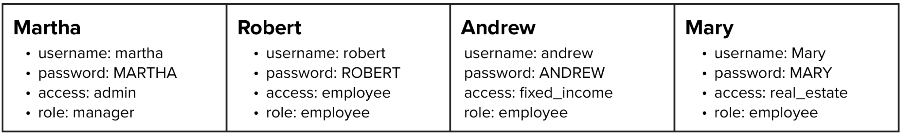
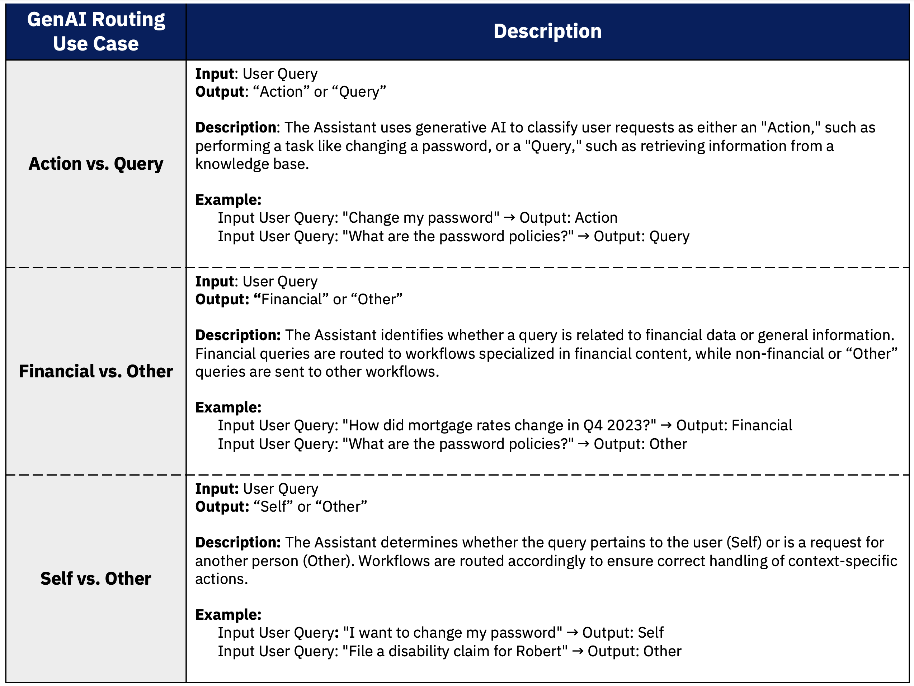

Unified Virtual Assistant
Leverage watsonx Orchestrate to build a unified user experiance with gen-AI routing, IAM, governance, RAG, and third-party integrations.
Overview
The goal of a solution doc is to outline a clear and actionable plan for implementing a unified agent that effectively leverages generative AI to route conversations to the appropriate actions and integrations. This document serves as a blueprint for developers and project managers by providing a detailed roadmap for the overall implementation and configuration of various generative AI capabilities and third-party integrations, as well as outlining the necessary infrastructure and workflows.
This solution doc will address the different use cases for this soltuion, as well as outline the necessary requirements for building out each solution component to ultimately demonstrate a successful implementation of the unified agent with generative AI capabilities.
Business Statement
- A plethora of siloed internal chatbots is posing challenges to an enterprise’s operational, compliance, and enterprise architecture standards.
- Employees are frustrated because they have to locate the right chatbot to answer their specific questions.
- Enterprise Architecture team is frustrated because lines of business will launch their own chatbot to fill their teams’ specific needs.
- Compliance teams are frustrated because there is no single point of oversight to ensures that chatbot responses are grounded on vetted information and that sensitive material remains protected.
Challenges
- User Experience challenges:
- Time to information: Information is difficult to find in a timely manner, as employees need to first know which chatbot to leverage for their particular question.
- Limited Access: users will only be able to leverage the chatbots they are aware of. Many employees will be without the conversational search of a chatbot unless they have awareness and access to it.
- Limited capabilities and integration: very few chatbots are currently designed to do more than provide information. Employees need to take extra steps in order to action on the insight (like opening tickets, connecting with support, etc)
- Cost and Operational challenges:
- Redundant efforts: lines of business across the business are duplicating efforts by creating redundant chatbots.
- Scalability: Without a unified approach, every new chatbot that is added only magnifies the existing user experience challenges and info risk challenges.
- Information Challenges:
- Veracity Risk: How can Enterprise Architecture and Compliance teams ensure that the many chatbots across each line of business are providing employees information grounded on vetted source material?
- Security and Sensitivity Risk: How can Enterprise Architecture and Compliance teams ensure that sensitive material remains protected across specified clearance levels?
- Enterprise-level governance: Enterprise Architecture lacks a single view of all LLMs deployed in the organization.
Desired Outcomes
- A platform that can unite across lines of business
- Flexibility to connect with existing systems as well as extend to future additions.
- Enable users to take actions (like opening tickets, changing passwords, etc)
- Enable users to answer questions, grounded on pre-approved source material
- Governed access to sensitive content (only allow access to content that you are cleared for)
- Delegate specified questions to vetted chatbots that may already exist across the enterprise
Expected Benefits to the business
- A More Informed Workforce: less noise per inquiry, less time to answers
- Cost and Operational Efficiency Gains: reduced duplicated efforts and a scalable framework
- Enhanced Compliance and Governance: a united framework enables clearer centralized oversight - including models deployed, model health, source information, governed access to sensitive material
Core Capabilities
Identity and Access Management (IAM)
It is essential to consider the security and access control aspects for the user interface within the agent. Implementing user login functionality allows users to securely authenticate themselves, enabling them to access specific actions and features based on their access rights. By integrating user access information with the chatbot, the system can ensure that users can only interact with and modify data they are authorized to access. This not only enhances the overall security of the system but also provides a more personalized and controlled user experience.
For instance, a user with administrative privileges may have access to change theirs’ and others’ passwords , while a regular user will be limited to basic functions. This approach ensures that users are only exposed to the features and actions they are qualified to perform, reducing the risk of errors and improving the usability of the chatbot.
Examples:
For this solution there was a focus on four simulated personas.

Admin : Has the ability to change passwords
Manager : Has the ability to file short-term disablity requests for oneself and others
Employees : Has the ability to search corpus for answers and open tickets to change passwords or open short-term disablity requests
fixed-income access : Has the ability to search documents pertaining to fixed-income reports
real-estate access : Has the ability to search documents pertaining to real-estate reports
Generative-AI Driven Routing
Leveraging generative AI to help classify user prompts as different groups can significantly improve the routing of conversations to the right actions within an assistant builder. This approach not only streamlines the conversation routing process but also enhances the overall user experience by providing more accurate and relevant responses.

RAG Document Search
By leveraging a RAG pipeline to help users query a given knowledge base corpus, the Assistant can provide a more reliable and accurate knowledge base search experience. This not only enhances the overall user experience but also ensures that users receive the most relevant and up-to-date information possible by providing source links to the provided answers.
A RAG pipeline for Document Search usually consists of a Data Repository, a Vector Database and a Large Language Model. This pipeline can be carried out as one of two patterns.
3rd-Party Applications
Integrating third-party applications with a chatbot is pivotal for predefined workflows within an organization because it allows the chatbot to seamlessly interact with various systems, streamlining processes and enhancing efficiency. By leveraging existing tools and platforms, the chatbot can execute tasks such as updating databases, triggering notifications, or retrieving real-time data without manual intervention.
3rd-Party integrations ensures that the chatbot is not just a standalone solution but becomes a central hub for workflow automation, reducing operational silos and enabling more cohesive and agile business operations. Moreover, the ability to connect with third-party services empowers organizations to customize and expand their workflows, making the chatbot a more flexible and powerful tool that adapts to the organization’s unique needs.
This solution covers integrations with ServiceNow to showcase how to leveragae workflows that require opening tickets.
Governance
Implementing watsonx governance mechanisms is critical for managing the complexities and risks of AI model deployments. Clear guidelines and oversight help mitigate risks like data bias and model drift, ensure real-time monitoring, and foster transparency by documenting processes, data sources, and decision criteria.
Governance frameworks also optimize resource allocation by prioritizing high-value AI initiatives, ensuring efficient use of resources. IBM® watsonx.governance™ provides a comprehensive framework to enhance transparency, accountability, and compliance, empowering organizations to responsibly harness AI’s potential while minimizing risks.
Subordinate Bot Mediation
One aspect of creating a unifying platform is the ability to connect and interface with existing chatbots which may have their own data corpuses or access policies. The parent or unifying agent should be able to hand-off requests to the relevant chatbots.
For example, if there is an existing chatbot which has access to financial analyst reports data source, the parent/unifying bot should be able to hand-off questions to that chatbot’s domain and return it back to the user in the parent bot.